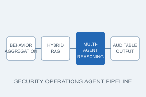

Security Operations Large Language Model
Bank of Communications · 2025–2026
Designed a behavior-aggregation-first pipeline that combines vector retrieval, BM25, IOC matching, multi-agent triage, specialist review, evidence citation, and human feedback for auditable SOC alert investigation.
LLM Agents Hybrid RAG AI Security